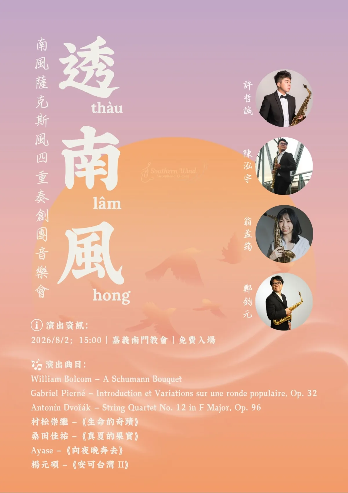

嘉義的夏日午後，將有一場從家鄉出發的薩克斯風室內樂演出。南風薩克斯風四重奏創團音樂會《透南風》，將於 2026 年 8 月 2 日（日）下午 3 時在嘉義南門教會舉行，下午 2 時 30 分開放入場，全場免費。
南風薩克斯風四重奏由鄭鈞元、陳泓宇、翁孟筠與許哲誠四位來自南臺灣、具有海外求學經驗的古典薩克斯風演奏者組成。團名取意於南風帶來的「返潮」，也呼應音樂家帶著所學回到家鄉「返巢」：把在不同地方接觸的音樂帶回嘉義，重新聆聽自己與土地之間的關係。
演出資訊
- 演出名稱：《透南風》南風薩克斯風四重奏創團音樂會
- 演出日期：2026 年 8 月 2 日（日）
- 演出時間：15:00（14:30 開放入場）
- 演出地點：嘉義南門教會（嘉義市東區吳鳳南路 547 巷 25 號）
- 入場方式：免費入場
- 演出者：鄭鈞元、陳泓宇、翁孟筠、許哲誠
從嘉中管樂出發，再把聲音帶回嘉義
四位團員之中，有兩位與嘉中管樂有直接而深厚的連結。鄭鈞元（8431）在嘉義高中管樂社開始學習薩克斯風，赴法深造後回到嘉義投入演奏與音樂教育；許哲誠（0431）畢業於國立嘉義高中音樂班，高中階段師事鄭鈞元，並曾參與嘉義高中校友暨在校生聯合音樂會。這次兩位校友與另外兩位南臺灣演奏家共同組成四重奏，也讓師生之間的音樂傳承延伸到新的室內樂舞台。
從歐洲古典到臺灣作品
《透南風》的曲目橫跨法國經典、弦樂四重奏改編、日本流行音樂與臺灣作品，呈現四位演奏者在不同音樂文化之間累積的學習與感受。依主辦單位海報，演出曲目包括：
- William Bolcom：A Schumann Bouquet
- Gabriel Pierné：Introduction et Variations sur une ronde populaire, Op. 32
- Antonín Dvořák：String Quartet No. 12 in F Major, Op. 96
- 村松崇繼：《生命的奇蹟》
- 桑田佳祐：《真夏的果實》
- Ayase：《向夜晚奔去》
- 楊元碩：《安可台灣 II》
這不是嘉義高中管樂社主辦的演出，我們將它收錄在「嘉義管樂演出分享」。如果你喜歡薩克斯風、室內樂，或想聽見青年演奏者如何把海外學習經驗帶回嘉義，歡迎在 8 月 2 日午後走進南門教會，一起感受這陣從家鄉吹起的南風。
本頁依南風薩克斯風四重奏公開文字與正式海報整理；演出時間、地點及曲目如有異動，請以主辦單位最新公告為準。